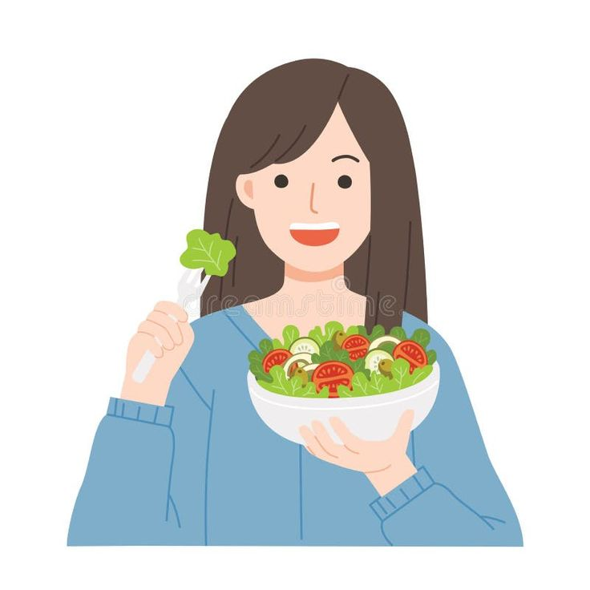

Como posso comer bem?
Uma alimentação saudável é fundamental para o bem-estar do corpo e da mente. Comer de forma equilibrada pode melhorar a disposição, a saúde do coração, a digestão e até a qualidade do sono. Ao adotar hábitos alimentares saudáveis, você está investindo em uma vida mais longa e saudável.
Descubra os benefícios de consumir alimentos frescos e naturais e como pequenas mudanças na sua dieta podem ter um grande impacto na sua saúde:
- Melhora a Digestão: Alimentos frescos e naturais são ricos em fibras, o que ajuda a regular o trânsito intestinal, prevenindo constipação e promovendo uma digestão saudável.
- Aumenta a Imunidade: Alimentos naturais, como frutas e vegetais frescos, são fontes poderosas de vitaminas, minerais e antioxidantes, que fortalecem o sistema imunológico.
- Reduz o Risco de Doenças Crônicas: Dietas ricas em alimentos frescos e naturais têm sido associadas à redução do risco de doenças crônicas como diabetes tipo 2, doenças cardíacas e câncer.
- Controle de Peso: Alimentos frescos e naturais são geralmente menos calóricos e mais nutritivos, o que pode ajudar no controle do peso corporal, prevenindo o excesso de gordura.
- Melhora a Qualidade da Pele: O consumo de frutas e vegetais frescos, ricos em antioxidantes e vitaminas, pode melhorar a saúde da pele, reduzindo sinais de envelhecimento e mantendo uma aparência saudável.
- Aumenta a Energia: Alimentos naturais e frescos são fontes de nutrientes de fácil digestão, proporcionando mais energia ao longo do dia e evitando picos e quedas de açúcar no sangue.
- Equilibra os Níveis de Colesterol: Alimentos frescos e naturais, como peixes, nozes e grãos integrais, podem ajudar a reduzir o colesterol ruim (LDL) e aumentar o colesterol bom (HDL), promovendo a saúde cardiovascular.
- Melhora o Humor: A dieta rica em alimentos frescos pode impactar positivamente o bem-estar mental, reduzindo sintomas de ansiedade e depressão, devido ao seu efeito equilibrante sobre os hormônios e neurotransmissores.
- Prevenção de Deficiências Nutricionais: Alimentos frescos, como frutas e vegetais, fornecem uma ampla gama de nutrientes essenciais que muitas vezes não são encontrados em alimentos processados, prevenindo deficiências vitamínicas.
- Aumenta a Longevidade: Comer alimentos frescos e naturais regularmente está associado à longevidade, já que esses alimentos oferecem proteção antioxidante e anti-inflamatória, retardando o envelhecimento celular e melhorando a saúde geral.